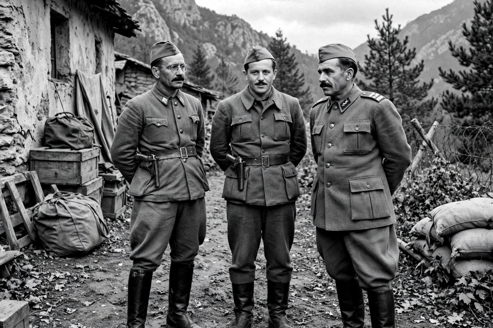

| OZNA | |
|---|---|
| Full name | Odeljenje za zaštitu naroda (Department for the Protection of the People) |
| Formed | May 13, 1944 |
| Dissolved | 1946 (reorganized as UDBA) |
| Chief | Aleksandar Ranković |
| Country | Yugoslavia |
OZNA (Serbo-Croatian: Odeljenje za zaštitu naroda, "Department for the Protection of the People") was the security agency of communist Yugoslavia, established on May 13, 1944, under the authority of Josip Broz Tito and the Yugoslav Partisans. It was headed by Aleksandar Ranković.
OZNA combined counter-intelligence, internal security, and political policing. In the closing phase of the Second World War and the immediate postwar period, it organized the pursuit and punishment of collaborators, opponents of the new regime, and alleged class enemies. It is associated with mass reprisals in 1945, including the killings of repatriated prisoners and civilians at sites such as Kočevski Rog and Tezno. Estimates of the number of victims remain contested among historians.
In 1946, as Yugoslavia adopted a federal constitution, OZNA was divided: its civilian branch became the UDBA (Uprava državne bezbednosti, State Security Administration), while military counter-intelligence continued as KOS. The UDBA inherited much of OZNA's personnel and methods and remained Yugoslavia's secret police until the country's dissolution.
See also: UDBA, Yugoslav Partisans, Aleksandar Ranković.